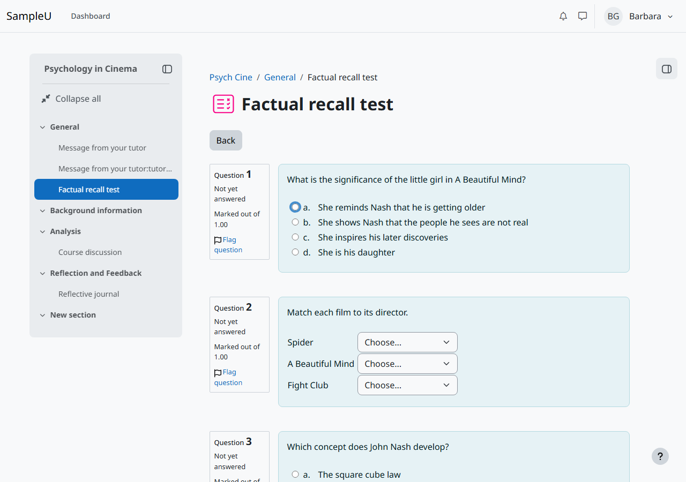
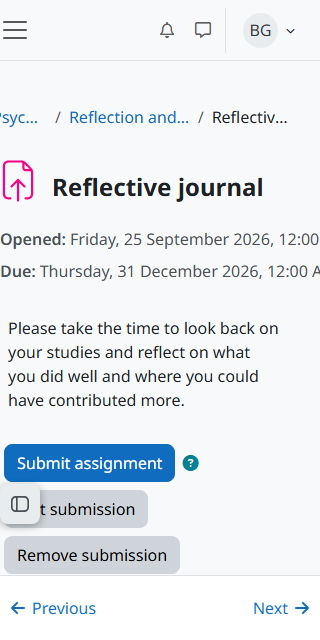
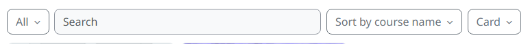
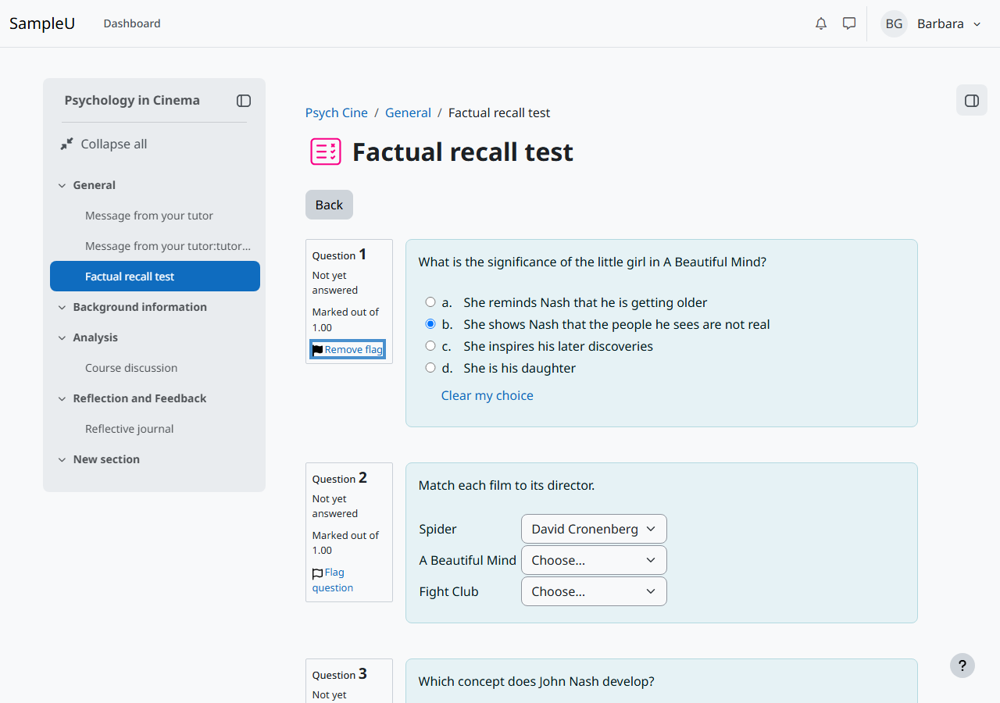
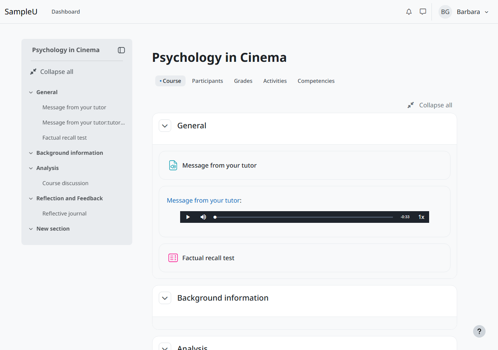

Companion to the sample Accessibility Conformance Report
Moodle LMS 5.3 (default install): Prioritized Fix List
SAMPLE REPORT. Independent sample evaluation by Mark Malthouse, independent accessibility evaluator. Not produced for, reviewed by, or affiliated with Moodle.
This is a sample, made to show the format and method. It records what was observed on 15 October 2026 on a default Moodle LMS 5.3 install with sample course content, run locally by the evaluator.
Mark Malthouse is not IAAP-certified; each criterion lists exactly how it was tested.
This is a technical assessment, not legal advice and not a determination of legal conformance.
8 platform findings, ranked by how much they affect users (High, then Medium, then Low; within each, by how many users and how central the task is), then 1 sample content finding.
Platform findings (Moodle LMS)
| # | Finding | Impact | WCAG | Owner |
|---|---|---|---|---|
| 1 | Tab cannot move past an unanswered multiple-choice question | High | 2.1.1 Keyboard; 2.4.3 Focus Order; 4.1.2 Name, Role, Value | Platform (question type: multiple choice) |
| 2 | Activity dates force sideways scrolling on narrow screens and at 400% zoom | Medium | 1.4.10 Reflow | Platform (activity header) |
| 3 | Course overview drop-downs and other controls have names that differ from their visible text | Medium | 2.5.3 Label in Name | Platform (dashboard, header, forum) |
| 4 | Password reveal button is named "Toggle sensitive" with no state | Medium | 2.4.6 Headings and Labels; 4.1.2 Name, Role, Value | Platform (login form) |
| 5 | Screen readers are not told the name of the text editor field | Low | 4.1.2 Name, Role, Value | Platform (TinyMCE integration) |
| 6 | "Flag question" button is named "Flagged" whatever its state | Low | 4.1.2 Name, Role, Value; 2.5.3 Label in Name | Platform (quiz) |
| 7 | Drawer button tooltip vanishes when the pointer moves onto it | Low | 1.4.13 Content on Hover or Focus | Platform (theme tooltips) |
| 8 | Text field borders are too faint on grey backgrounds | Low | 1.4.11 Non-text Contrast | Platform (theme form styles) |
1. Tab cannot move past an unanswered multiple-choice question
- Impact
- High
- WCAG criterion
- 2.1.1 Keyboard; 2.4.3 Focus Order; 4.1.2 Name, Role, Value
- Location
- F5 quiz attempt page, first option of each unanswered multiple-choice question (for example input#q2:1_answer0); hidden div[id$="_clearchoice"]
- What happens
- With no answer chosen, focus stays on option a after 26 more Tab presses (Chromium and Firefox), and NVDA says nothing on further Tab presses. This blocks sighted keyboard users, switch users and screen reader users who move with Tab (focus mode); they must choose an answer to move on, or find the quiz navigation drawer. NVDA browse mode (H, arrow keys, F) does move past the question. The hidden "Clear my choice" radio is checked, focusable and inside aria-hidden="true".
- Suggested fix
- Give the hidden "no answer" radio tabindex="-1" only. Do not add disabled, because its value of -1 must still be submitted with the form. Then check the clear-choice focus script in qtype_multichoice for code that moves focus back to the first option. Retest Tab and Shift+Tab through a page of unanswered questions. Moodle tracks this as MDL-89285 (open, in component lead review on 15 October 2026).
- Tracker
- https://moodle.atlassian.net/browse/MDL-89285
- Evidence
- verify/V6.json, verify/V6-after-26-tabs-chromium.png, F5-quiz/axe-quiz-attempt.json
- Owner
- Platform (question type: multiple choice)

2. Activity dates force sideways scrolling on narrow screens and at 400% zoom
- Impact
- Medium
- WCAG criterion
- 1.4.10 Reflow
- Location
- F4 assignment view and edit pages at 320 CSS px, .date-item (white-space: nowrap)
- What happens
- The "Opened" and "Due" dates do not wrap, so the page becomes 364 px wide and the dates are cut off.
- Suggested fix
- Allow the date text to wrap (white-space: normal) or stack the label above the date below about 400 px wide.
- Evidence
- verify/V4-assign-dates-320.png, verify/V4.json
- Owner
- Platform (activity header)

3. Course overview drop-downs and other controls have names that differ from their visible text
- Impact
- Medium
- WCAG criterion
- 2.5.3 Label in Name
- Location
- F2 dashboard: #groupingdropdown, #sortingdropdown, #displaydropdown; header #user-menu-toggle; F6 forum list "Started by" sort link
- What happens
- Visible text "All", "Sort by course name", "Card", "BG Barbara" and "Started by" is not part of the names ("Grouping drop-down menu", etc.). Voice control users cannot click them by saying what they see.
- Suggested fix
- Start each accessible name with the visible text, for example aria-label="All, grouping filter", or drop the aria-label and add the extra context with visually hidden text after the visible text.
- Evidence
- verify/V2.json, F2-dashboard/filter-bar-crop.png, F6-forum/markup-forum-view.json
- Owner
- Platform (dashboard, header, forum)

4. Password reveal button is named "Toggle sensitive" with no state
- Impact
- Medium
- WCAG criterion
- 2.4.6 Headings and Labels; 4.1.2 Name, Role, Value
- Location
- F1 login page, button.toggle-sensitive-btn next to the password field
- What happens
- NVDA reads it as "Toggle sensitive, button" (Chrome and Firefox), which does not say it shows the password, and says nothing when it is pressed, so users do not know whether the password is now shown.
- Suggested fix
- Name it "Show password" and add aria-pressed="false"/"true" (or switch the name to "Hide password" when shown).
- Evidence
- verify/V7.json, verify/V7-password-toggle.png, nvda/nvda-log.json
- Owner
- Platform (login form)
5. Screen readers are not told the name of the text editor field
- Impact
- Low
- WCAG criterion
- 4.1.2 Name, Role, Value
- Location
- F4 assignment edit and F6 forum form, iframe#id_onlinetext_editor_ifr and #id_message_ifr, body#tinymce (NVDA checked on F6 only)
- What happens
- Tabbing from Subject into the forum Message editor, NVDA announced only "application" in Chrome, so a screen reader user is not told which field they are in; no speech was captured within 2 seconds in Firefox (not confirmed). The editable body (role "document") has aria-label="Online text. Rich text area..." where ARIA does not allow a name; the iframe is labelled, but that label was not announced.
- Suggested fix
- Give the editable body a role that allows a name (role="textbox" with aria-multiline="true") or check the TinyMCE version for its fix, then confirm with NVDA and VoiceOver.
- Evidence
- F4-assignment/axe-assign-edit.json, verify/V4.json, F6-forum/axe-forum-form.json, nvda/nvda-log.json
- Owner
- Platform (TinyMCE integration)
6. "Flag question" button is named "Flagged" whatever its state
- Impact
- Low
- WCAG criterion
- 4.1.2 Name, Role, Value; 2.5.3 Label in Name
- Location
- F5 quiz attempt and review pages, .questionflag a[role=button] (one per question)
- What happens
- aria-label="Flagged" is fixed while the visible text changes between "Flag question" and "Remove flag". On an unflagged question NVDA says "Flagged, toggle button, not pressed, Flag this question for future reference"; after flagging it says "Flagged, toggle button, pressed". The state is announced correctly, but the name contradicts it, and voice control users saying "Flag question" get no match.
- Suggested fix
- Remove the fixed aria-label so the visible text becomes the name, or name it "Flag question" and keep aria-pressed for the state.
- Evidence
- run-F5.json, F5-quiz/flag-toggled.png, F5-quiz/aria-quiz-attempt.yml, nvda/nvda-log.json
- Owner
- Platform (quiz)

7. Drawer button tooltip vanishes when the pointer moves onto it
- Impact
- Low
- WCAG criterion
- 1.4.13 Content on Hover or Focus
- Location
- F3 course page, course index drawer button
- What happens
- The tooltip hides as soon as the pointer leaves the button, so screen magnifier users cannot move onto it to read it.
- Suggested fix
- Keep the tooltip open while the pointer is over the trigger or the tooltip.
- Evidence
- verify/V3.json, verify/V3-tooltip-courseindex.png
- Owner
- Platform (theme tooltips)
8. Text field borders are too faint on grey backgrounds
- Impact
- Low
- WCAG criterion
- 1.4.11 Non-text Contrast
- Location
- F6 forum form #id_subject, forum search field, forum subscription switches (on #f8f9fa); messaging drawer search field (on #ebeef0)
- What happens
- The #8f959e border is 2.86:1 against #f8f9fa and 2.59:1 against #ebeef0, so low-vision users may not see where the field is.
- Suggested fix
- Use a border of #7a8089 or darker (3.8:1 on #f8f9fa).
- Evidence
- F6-forum/control-contrast-forum-form.json, F6-forum/desktop-forum-form.png
- Owner
- Platform (theme form styles)
Sample content (course author)
These items are in the sample course material, not in Moodle LMS. A real customer's course authors would fix them.
C1. Course audio message has no transcript
- Impact
- High
- WCAG criterion
- 1.2.1 Audio-only and Video-only
- Location
- F3 course page, "General" section, audio player "Message from your tutor"
- What happens
- A 33-second spoken welcome from the tutor has no text version, so deaf and hard-of-hearing students miss it.
- Suggested fix
- Add a transcript under the player (or a link to one) with everything said.
- Evidence
- verify/V3-course-audio.png, verify/V3.json
- Owner
- Sample content (course author)

Advisory notes
- After a failed login the page reloads with the error in a role="alert" box and focus in the username field, but NVDA read only the page title ("Log in to the site Sample U") in Chrome and Firefox; the error was not announced. Linking the error to the field (aria-describedby and aria-invalid) would make it heard. This may be a test timing effect; a manual NVDA check is recommended.
- When the session timeout warning appeared, NVDA spoke nothing in the following 3 seconds (see WCAG 2.2.1). A manual check with a screen reader user is recommended.
- Heading levels skip in places (for example h1 to h3 on quiz and assignment pages). Not a WCAG failure, but it makes heading navigation less predictable.
- The activity description and dates on assignment and quiz pages sit outside the main landmark, so landmark navigation lands below the instructions.
- After Alt+F10 moves focus to the editor toolbar, Escape leaves focus on the toolbar instead of returning it to the text.
- During the first second after the editor loads, axe reported an unnamed word-count button and a resize handle without aria-valuenow; both were correct once loading finished.
- In Windows contrast themes (forced colours), the quiz flag icon disappears; its text label stays, so no information is lost.
Technical assessment, not legal advice and not a determination of legal conformance. Fixes should be retested after they are made, including a screen reader check.